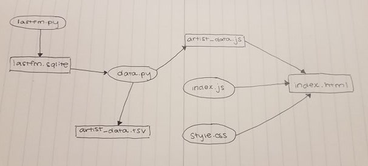

Top 100 Artists of All Time
Alexandra Cortez
... At least, according to my Last.fm.
Checkout out who I've been listening to lately by scrolling over each bubble!
For each artist, my listens make up for...
Project Overview
Goals
- Create a fully-working, visually pleasing program without any scaffolding
- Create and modify tables in a SQLite Database
- Utilize APIs (including researching possible methods)
- Utilize Visualization software (including researching options)
- Follow proper coding conventions (documenting functions)
Process
Get Data
Using the Last.fm API, I gathered my top 100 artists of all time, how many times I played them, and how many times they were played in total by any user.
I then inserted this data into a SQLite database.
Process Data
Retrieving the data from the database, I wrote a small python program to calculate my percentage of listens out of all time listens for each artist.
This program then exports the data in two ways: one is a readable "report" tsv file, the other is a .js file containing the cleaned data and calculations for visualizations.
Plot Data
Using D3js, I created two types of visualization with my data stored in the .js file:
- The Bubble Chart
- The Pie Charts
Report
- Goals Achieved
I achieved my goal of creating a fully-working program from scratch. This program used a SQLite Database as well as the Last.fm API and D3js visualization software.
- Problems Faced
The biggest problems I faced in this project were caused by D3js and the fact that this is my first time using it. There's definitely a high learning curve to this library.
- Instructions for Running my Code
- Run lastfm.py to request listening data from Last.fm. The resulting data is stored in lastfm.sqlite
- Run data.py to grab the data from the lastfm.sqlite and output artist_data.tsv and js/artist_data.js.
- Opening index.html (or visiting this site soon to be published) on your local machine displays the data visualizations and report.
 - Resources
Date Issue Description Location of Resource Result Dec 9, 2018 Artists yunggoth✰ and アナログフィッシュ crashed my data gathering because of the characters in their names. Stack overflow I used the function I found on Stack overflow but modified it to simply remove the characters that the API requests didn't like. This worked for yunggoth✰ but the best solution I could find for the Japanese artist was to hardcode searching for it in it's English name. Dec 10, 2018 Artist Jack Harlow crashed my data gathering for no plausible reason. I still can't quite figure out the exact reason why this happened. Stack overflow I added a .lower() to all my artist names before adding them to my request URLs. This fixed the problem. Dec 11, 2018 Initially, I had tried to load my data from the tsv file in javascript using the d3.tsv() function. I couldn't get the bubble graph to recognize this data as children data. Stack overflow I ditched the tsv file and instead modified data.py to also output a js file that contained the Last.fm data in an object stored as a global variable. I then linked the js file so I could access it in index.js for building my visualizations. Dec 11, 2018 Understanding all the special functions in D3. D3 in Depth These documents were a huge help in getting me started with things like selections, data joins, and layouts. They helped me get started with laying out my visualizations. Dec 12, 2018 How to format data to make a pie chart in D3. D3 Layout Pie Chart block Gave a great example of how to use a small array to make a single pie chart. I used this as a model to create all of my pie charts using the member variables of the nodes I had previously loaded for the bubble chart. Dec 12, 2018 Adding text to my visualizations that were fully visible but not too messy. Simple d3.js tooltips block I used this block's tooltips as a model for my own tooltips on both the bubble and pie chart visualizations. Specifically the syntax for transitioning on mousover and mouseout events was very helpful.